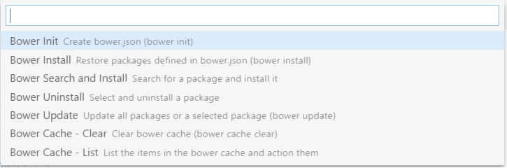
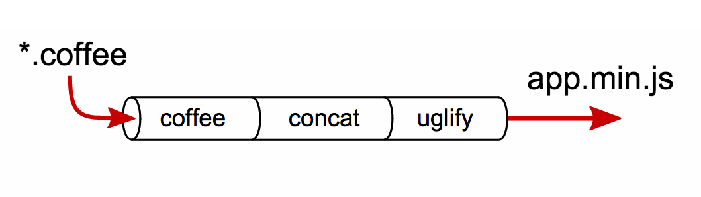
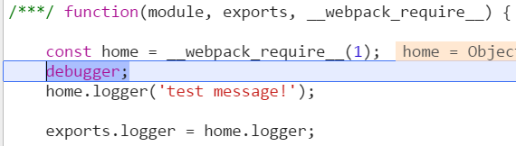
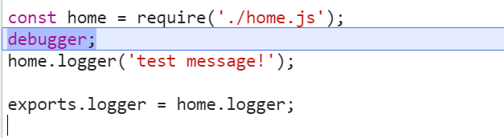

Гладкий Максим Валерьевич / github:MaksHladki
Программная платформа, основанная на движке V8 (транслирует JS в машинный код), превращающая JavaScript из узкоспециализированного языка в язык общего назначения. Node.js добавляет возможность JavaScript взаимодействовать с устройствами ввода-вывода через свой API (на C++), подключать другие библиотеки, написанные на разных языках, обеспечивая вызовы к ним из JS-кода
Предоставить естественную неблокирующую, событийно-ориентированную инфраструктуру для написания программ с высокой конкурентностью (с) Ryan Dahl
Много I/O
Realtime
// Загружаем модуль http
var http = require('http');
// Создаем web-сервер с обработчиком запросов
var server = http.createServer(function (req, res) {
console.log('Начало обработки запроса');
// Передаем код ответа и http-заголовки
res.writeHead(200, {
'Content-Type': 'text/plain; charset=UTF-8'
});
res.end('Hello world!');
});
// Запускаем web-сервер
server.listen(2002, "127.0.0.1", function () {
console.log('Сервер запущен http://127.0.0.1:2002/');
});
>node -v // 7.2.1
>node --version //7.2.1
>node
>console.log('Hello world');
//Hello world
//создаем файл index.js
console.log('Hello World');
>node index.js
//Hello World
По умолчанию npm будет устанавливать все пакеты в локальном каталоге, в котором вы сейчас работаете
| install | установка пакета |
| search | поиск пакета |
| view | просмотр информации о пакете |
| uninstall | удаление пакета |
| link | устанавливает связь между пакетами |
| unlink | удаляет связь между пакетами |
| init | инициализация нового пакета |
| publish | публикация пакета в репозитории |
| unpublish | удаление пакета из репозитория |
| owner | изменение прав доступа к пакету в репозитории |
| adduser | добавление нового пользователя |
| list | список установленных пакетов |
| update | обновление пакета либо самого npm |
| config | установка параметров конфигурации |
>npm install 'package name'
>npm install -g 'package name'
>npm install --global 'package name'
>npm install -g gulp
>npm install gulp@3.9.1
> npm install uglify-js --global
└─┬ uglify-js@2.6.2
├── async@0.2.10
├── source-map@0.5.3
├── uglify-to-browserify@1.0.2
└─┬ yargs@3.10.0
├── camelcase@1.2.1
├─┬ cliui@2.1.0
│ ├─┬ center-align@0.1.3
│ │ ├─┬ align-text@0.1.4
│ │ │ ├─┬ kind-of@3.0.2
│ │ │ │ └── is-buffer@1.1.2
│ │ │ ├── longest@1.0.1
│ │ │ └── repeat-string@1.5.4
│ │ └── lazy-cache@1.0.3
│ ├── right-align@0.1.3
│ └── wordwrap@0.0.2
├─┬ decamelize@1.1.2
│ └── escape-string-regexp@1.0.5
└── window-size@0.1.0
>npm search 'package name'
//не удобно
//лучше использовать ui интерфейс
https://www.npmjs.com/search?q=gulp
>npm view 'package name'
>npm view gulp
{ name: 'gulp',
description: 'The streaming build system',
dist-tags: { latest: '3.9.1' },
versions:
[ '0.0.1',
'0.0.2',
......
]
author: 'Fractal (http://wearefractal.com/)',
repository: {
type: 'git',
url: 'git+https://github.com/gulpjs/gulp.git' },
users:
{ jden: true,
stevelacy: true,
.....
}
}
>npm update [-g] 'package name' //latest version
>npm update -g gulp
>npm update -g npm
>npm config set 'key' 'value' [--global]
>npm config get 'key'
>npm config delete 'key'
>npm config list
>npm config edit npm c [set|get|delete|list]
>npm get 'key'
>npm set 'key' 'value' [--global]
>npm set init.author.name "maks"
>npm set init.author.email "test@gmail.com"
>npm set init.author.url "https://google.com"
>npm uninstall 'package name' [@version] [--save| [--save-dev] [--global]
//--save пакет будет удален из dependencies
//--save-dev пакет будет удален из devDependencies
>npm uninstall sax --save
>npm uninstall gulp --global
>npm uninstall node-tap --save-dev
>npm uninstall dtrace-provider --save-optional
>npm list [--global] [--depth]
>npm list -g --depth=0
//без лишних зависимостей
├── npm@3.7.5
└── uglify-js@2.6.2
Файл содержит в себе информацию о приложении: название, версию, зависимости и тому подобное. Любая директория, в которой есть этот файл, интерпретируется как Node.js-пакет, даже если вы не собираетесь публиковать его
| name | имя пакета |
| description | описание пакета |
| version | версия пакета |
| keywords | набор ключевых слов |
| author | информация об авторе пакета |
| main | главный файл пакета |
| license | тип лицензии |
| dependencies | все пакеты, от которых зависит текущий пакет (production) |
| devDependencies | все пакеты, от которых зависит текущий пакет (development) |
| repository | тип репозитория и ссылка на него |
| config | установка параметров конфигурации |
{
"name": "ddwa",
"version": "1.0.0",
"description": "",
"main": "index.html",
"scripts": {
"test": "echo \"Error: no test specified\" && exit 1"
},
"author": "Maksim Hladki",
"license": "MIT",
"devDependencies": {
"del": "^2.2.2",
"gulp": "^3.9.1",
"gulp-autoprefixer": "^3.1.1",
"gulp-clean-css": "^2.3.2",
"gulp-concat": "^2.6.1",
"gulp-connect": "^5.0.0",
.........
}
}
{ "dependencies" :
{
"foo" : "1.0.0 - 2.9999.9999",
"bar" : ">=1.0.2 <2.1.2",
"baz" : ">1.0.2 <=2.3.4",
"boo" : "2.0.1",
"qux" : "<1.0.0 || >=2.3.1 <2.4.5 || >=2.5.2 <3.0.0",
"asd" : "http://asdf.com/asdf.tar.gz",
"til" : "~1.2",
"elf" : "~1.2.3",// >= 1.2.3 < 1.3.0
"tra" : "^1.2.1",// >= 1.2.1 < 2.0.0
"two" : "2.x",
"thr" : "3.3.x",
"lat" : "latest",
"dyl" : "file:../dyl"
}
}
Менеджер пакетов, ориентированный на применении в разработке клиентской части веб-приложений с использованием JS библиотек и фреймворков
>npm install -g bower
//установка пакета angular
>bower install angular
//установка пакета из репозитория
>bower install git://github.com/angular/angular.js/
>bower install jquery
>bower cloning git://github.com/components/jquery.git
>bower cached git://github.com/components/jquery.git
>bower fetching jquery
>bower checking out jquery#2.0.0
>bower copying /Users/danheberden/.bower/cache/jquery/29cb...
>bower installing jquery#2.0.0
| search | поиск пакета по имени |
| install | установка пакета |
| list | список установленных пакетов |
| update | обновление выбранного пакета |
| uninstall | удаление пакета |
| init | инициализация конфигурационного файла bower.json |
>bower search jquery
Search results:
jQuery https://github.com/jquery/jquery.git
jquery https://github.com/jquery/jquery-dist.git
jquery.x https://github.com/jljLabs/jquery.x.git
jt_jquery https://github.com/vicanso/jt_jquery.git
jquery.Q https://github.com/jsbuzz/jQuery_Q.git
jquery-m https://github.com/meetup/jquery.git
jquery.j2d https://github.com/fsggs/jquery.j2d.git
jquery.hx https://github.com/millennialmedia/jquery.hx.git
jquery-ts https://github.com/andraaspar/jquery-ts.git
jquery-tm https://github.com/trymore/jquery-tm.git
jquery.gk https://github.com/ezoapp/jquery.gk.git
jquery-jec https://github.com/RaYell/jquery-jec.git
........
>bower install jquery#2.0.0
//result
bower jquery#2.0.0 not-cached https://github.com/jquery/jquery-dist.git#2.0.0
bower jquery#2.0.0 resolve https://github.com/jquery/jquery-dist.git#2.0.0
bower jquery#2.0.0 download https://github.com/jquery/jquery-dist/2.0.0.tar.gz
bower jquery#2.0.0 extract archive.tar.gz
bower jquery#2.0.0 resolved https://github.com/jquery/jquery-dist.git#2.0.0
jquery#2.0.0 bower_components\jquery
>bower list
//result
bower check-new Checking for new versions of the project dependencies...
HP C:\Users\HP
└── jquery#3.1.1 extraneous
>bower uninstall jquery
>bower init
//bower.json
{
name: 'Maks Hladki',
authors: [
'Maks Hladki <MaksHladki@gmail.com>'
],
description: 'test project',
main: 'index.html',
keywords: [
'js',
'frontend'
],
license: 'MIT',
homepage: 'https://github.com/MaksHladki/DDWA'.
dependencies: {
"jquery": "~3.1.1",
},
devDependencies: {}
}
ext install bower (Bower - Don Jayamanne)
| Develop | Build |
|---|---|
| Watch | Testing |
| Live Reload | Compile |
| ES6/TypeSctipt/Coffee | Concat |
| Sass/Less | Rename |
| JsHint | Minify |
| Image optimization | |
| Deployment |
| Gulp | Grunt |
|---|---|
| ориентирован на поток | ориентирован на файл |
| запускает задачи параллельно | запускает задачи последовательно |
| синтаксис более краток и лаконичен | основан на конфигурации |
| проектировался для больших проектов | проектировался для средних и небольших проектов |
| скорость выполнения выше |
├── app/
├── css/
├── fonts/
├── images/
├── index.html
├── js/
└── scss/
├── dist/
├── gulpfile.js
├── node_modules/
└── package.json
├── .tmp
│ ├── app.css
│ ├── app.js
│ └── index.html
├── bower_components
│ └── angular
├── dist
│ ├── app.min.css
│ ├── app.min.js
│ └── index.html
├── src
├── app.scss
├── app.ts
├── components
└── index.html
├── gulpfile.js
├── node_modules/
└── package.json
Предпочитая код конфигурации, Gulp оставляет простые задачи простыми, а из сложных делает управляемые
const gulp = require('gulp'),
coffee = require('gulp-coffee'),
concat = require('gulp-concat'),
cssmin = require('gulp-cssmin');
gulp.task('coffee', () => {
//TODO
});
Используя преимущества потока данных, процесс выполнения задач получается более быстрым, промежуточные файлы не создаются и на диск не записываются (Vinul FS)
gulp.task('html', () => {
return gulp.src(srcPath.html)// Считываем файл с диска
.pipe(useref()) //Обрабатываем в оперативной памяти
.pipe(gulpif('*.js', uglify())) //Обрабатываем в ОП
.pipe(gulpif('*.css',
pipe(
autoprefixer({
browsers: ['last 2 versions']
}),
cssmin()
)
))// Обрабатываем в оперативной памяти
.pipe(gulp.dest(distPath.html))// Записываем файл на диск
.pipe(connect.reload());
});
Все плагины для Gulp пишутся по специальным правилам. Этот процесс позволяет задачам оставаться простыми и работать так, как этого ожидает разработчик
Общее количество плагинов на декабрь 2016: 1100+
Можно начать работать с Gulp с минимальными знаниями API. Нужно всего лишь понимать принцип работы основных четырех функций: task, watch, src и dest
>npm install --global gulp
>npm install --save-dev gulp
var gulp = require('gulp');
gulp.task('default', function() {
console.log('Gulp is running!');
});
>gulp
[16:20:01] Using gulpfile G:\test\gulpfile.js
[16:20:01] Starting 'default'...
Gulp is running!
[16:20:01] Finished 'default' after 200 µs
>gulp default
//если имя задачи не установлено, вызывается задача с именем default
[16:21:17] Using gulpfile G:\test\gulpfile.js
[16:21:17] Starting 'default'...
Gulp is running!
[16:21:17] Finished 'default' after 181 µs
gulp.task(name[, deps], fn)
//name - required
//deps - массив зависимых зависимостей
//fn - callback вызова
gulp.task('hello', function() {
console.log('Hello world!');
});
gulp.task('css', ['greet'], function () {
//TODO
});
gulp.task('build', ['css', 'js', 'imgs']);
gulp.task('default', function () {
//TODO default task
});
gulp.watch(glob[, opts, fn])
//globs - строка или массив
//options - доп. параметры или callback
gulp.watch('js/**/*.js', function(event) {
console.log('File ' + event.path + ' type ' + event.type);
});
gulp.task('watch', function(){
gulp.watch('app/scss/**/*.scss', ['sass']);
gulp.watch('app/css/**/*.css', ['css']);
gulp.watch('app/js/**/*.js', ['js']);
// Other watchers
});
gulp.src(globs[, options])
//globs - строка или массив
//options - доп. параметры
//возвращает входной поток
gulp.src('./*.jade')
gulp.src('*.+(js|css)')
gulp.src('*.{jpg,jpeg,png,gif}')
gulp.src(['js/**/*.js', '!js/**/*.min.js'])
gulp.dest(path, [,options])
//принимает путь к файлу и возвращает исходящий поток
gulp.task('css', () => {
return gulp.src(srcPath.css)
.on('data', (file) => {
console.log({
path:file.path,
basename: file.basename
});
})
.pipe(sourcemaps.init())
.pipe(autoprefixer(autoprefixerSettings))
.pipe(cleanCSS(cleanCSSSettings))
.pipe(sourcemaps.write())
.pipe(gulp.dest(distPath.css));
});
.pipe(destination)
//возвращает поток
//destination - тоже поток
gulp.src('./client/templates/*.jade')
.pipe(jade())
.pipe(gulp.dest('./app'))
.pipe(minify())
.pipe(gulp.dest('./dist'));
>npm install browser-sync gulp --save-dev
const gulp = require('gulp'),
browserSync = require('browser-sync').create();
gulp.task('html', () => {
return gulp.src('src/**/*.html').pipe(gulp.dest('dist/'));
});
gulp.task('css', () => {
return gulp.src("src/css/*.css")
.pipe(gulp.dest("dist/css"))
.pipe(browserSync.stream());//*
});
gulp.task('serve', ['html' ,'css'], () => {
browserSync.init({ server: "./dist" });
});
gulp.task('watch', () => {
gulp.watch('src/css/*.css', ['css']);
gulp.watch('src/**/*.html', ['html'])
.on('change', browserSync.reload);//*
});
gulp.task('default', ['serve', 'watch']);
gulp.task('serve', () => {
browserSync.init({
server: distPath.dist,
port: 4000
});
browserSync.watch(distPath.dist).on('change', browserSync.reload);
});
browserSync.reload();
browserSync.reload("styles.css");
browserSync.reload(["styles.css", "ie.css"]);
browserSync.reload("*.css");
//возвращает трансформированный поток данных,
//автоматически вставляемых в браузер
gulp.task('sass', function () {
return gulp.src('scss/styles.scss')
.pipe(sass({includePaths: ['scss']}))
.pipe(gulp.dest('css'))
.pipe(browserSync.stream());
//автоматически вставляет трансформированный поток в браузер
});
.pipe(browserSync.stream({once: true}));
// перегружает только один раз для потока данных
//(исходных файлов может быть несколько)
.pipe(browserSync.stream({match: "**/*.css"}));
//фильтр обновления только определенных файлов
var browserSync = require("browser-sync").create();
// запускаем сервер
browserSync.init({server: "./app"});
// останавливаем сервер через 5 секунд
setTimeout(function () {
browserSync.exit();
}, 5000);
browserSync.init({
server: "./dist",
port: 8000,
index: 'index.html',
//proxy: "localhost:8888",
browser: ["firefox"]
});
>npm install --save-dev gulp-connect
const gulp = require('gulp'),
connect = require('gulp-connect');
gulp.task('html', () => {
return gulp.src('src/**/*.html')
.pipe(gulp.dest('dist/'))
.pipe(connect.reload()); //*
})
gulp.task('serve', ['html'], () => {
connect.server({
root: 'dist', livereload: true //*
});
});
gulp.task('watch', () => {
gulp.watch('src/**/*.html', ['html']);
});
gulp.task('default', ['serve', 'watch']);
gulp.task('something', function() {
connect.server({
port: 8888
});
//BODY
connect.serverClose();
});
gulp.task('serve', ['html'], () => {
connect.server({
name: 'Test application',
root: ['dist', 'tmp'],
port: 8000,
livereload: true,
index: 'index.html'
});
});
>npm install --save-dev gulp-autoprefixer
const gulp = require('gulp'),
autoprefixer = require('gulp-autoprefixer');
gulp.task('css', () =>
gulp.src('src/app.css')
.pipe(autoprefixer({
browsers: ['last 2 versions']
}))
.pipe(gulp.dest('dist/css/'))
);
a {
display: -webkit-box;
display: -webkit-flex;
display: -ms-flexbox;
display: flex
}
const gulp = require('gulp'),
sourcemaps = require('gulp-sourcemaps'),
autoprefixer = require('gulp-autoprefixer'),
concat = require('gulp-concat');
gulp.task('css', () =>
gulp.src('src/**/*.css')
.pipe(sourcemaps.init())
.pipe(autoprefixer())
.pipe(concat('all.css'))
.pipe(sourcemaps.write('.'))
.pipe(gulp.dest('dist/css/'))
);
autoprefixer(
{
browsers: ['last 2 versions', 'ie 9', '> 1%'],
cascade: true, //визуальный каскад, если css не сжат
supports: false,//добавлять префикс к @supports параметрам,
stats: { //собственная статистика
"ie": {
"6": 0.01,
"7": 0.4,
"8": 1.5
},
"chrome": {
…
},
…
}
}
)
|
|
|
|
>npm install gulp-clean-css --save-dev
const gulp = require('gulp'),
cleanCSS = require('gulp-clean-css');
gulp.task('css', () => {
return gulp.src('app/styles/*.css')
.pipe(cleanCSS({compatibility: 'ie8'}))//ie8, * или '' для ie9+
.pipe(gulp.dest('dist/'));
});
const gulp = require('gulp'),
cleanCSS = require('gulp-clean-css');
gulp.task('css', function() {
return gulp.src('app/styles/*.css')
.pipe(cleanCSS({debug: true}, (details) => {
console.log(details.name + ': ' + details.stats.originalSize);
console.log(details.name + ': ' + details.stats.minifiedSize);
}))
.pipe(gulp.dest('dist/css/'));
});
const gulp = require('gulp'),
cleanCSS = require('gulp-clean-css'),
sourcemaps = require('gulp-sourcemaps');
gulp.task('css', function() {
return gulp.src('app/styles/*.css')
.pipe(sourcemaps.init())
.pipe(cleanCSS())
.pipe(sourcemaps.write())
.pipe(gulp.dest('dist/css/'));
});
});
>npm install gulp-sass --save-dev
const gulp = require('gulp'),
sass = require('gulp-sass');
gulp.task('sass', () => {
return gulp.src('./sass/**/*.scss')
.pipe(sass().on('error', sass.logError))
.pipe(gulp.dest('./css'));
});
gulp.task('watch', () => {
gulp.watch('./sass/**/*.scss', ['sass']);
});
const gulp = require('gulp'),
sass = require('gulp-sass');
gulp.task('sass', () => {
return gulp.src('./sass/**/*.scss')
.pipe(sass.sync().on('error', sass.logError))
//выполняется синхронно
.pipe(gulp.dest('./css'));
});
gulp.task('watch', () => {
gulp.watch('./sass/**/*.scss', ['sass']);
});
const gulp = require('gulp'),
sass = require('gulp-sass'),
sourcemaps = require('gulp-sourcemaps');
gulp.task('sass', function () {
return gulp.src('./sass/**/*.scss')
.pipe(sourcemaps.init())
.pipe(sass().on('error', sass.logError))
.pipe(sourcemaps.write())
.pipe(gulp.dest('./css'));
});
>npm install gulp-less --save-dev
const gulp = require('gulp'),
less = require('gulp-less');
gulp.task('less', () => {
return gulp.src('./less/**/*.less')
.pipe(less())
.pipe(gulp.dest('./public/css'));
});
const gulp = require('gulp'),
less = require('gulp-less'),
LessAutoprefix = require('less-plugin-autoprefix');
const autoprefix = new LessAutoprefix({ browsers: ['last 2 versions'] });
gulp.task('less', () => {
return gulp.src('./less/**/*.less')
.pipe(less({
plugins: [autoprefix]
}))
.pipe(gulp.dest('./public/css'));
});
const gulp = require('gulp'),
less = require('gulp-less'),
sourcemaps = require('gulp-sourcemaps');
gulp.task('less', () => {
return gulp.src('./less/**/*.less')
.pipe(sourcemaps.init())
.pipe(less())
.pipe(sourcemaps.write())
.pipe(gulp.dest('./public/css'));
});
>npm install --save-dev gulp-concat
const gulp = require('gulp'),
concat = require('gulp-concat');
gulp.task('scripts', () => {
return gulp.src('src/js/*.js')
.pipe(concat('bundle.js'))
.pipe(gulp.dest('dist/js/'));
});
const gulp = require('gulp'),
concat = require('gulp-concat'),
sourcemaps = require('gulp-sourcemaps');
gulp.task('css', () => {
return gulp.src('src/**/*.css')
.pipe(sourcemaps.init())
.pipe(concat('bundle.css'))
.pipe(sourcemaps.write())
.pipe(gulp.dest('dist/'));
});
>npm install --save-dev gulp-imagemin
const gulp = require('gulp'),
imagemin = require('gulp-imagemin');
gulp.task('img', () =>
gulp.src('src/img/*')
.pipe(imagemin())
.pipe(gulp.dest('dist/img/'))
);
const gulp = require('gulp'),
imagemin = require('gulp-imagemin');
gulp.task('img', () =>
gulp.src('src/img/*')
.pipe(imagemin(
[ imagemin.gifsicle(),
imagemin.jpegtran(),
imagemin.optipng(),
imagemin.svgo()
],
{ verbose: true})
)
.pipe(gulp.dest('dist/img/'))
);
[10:43:01] gulp-imagemin: ✔ vs-code-bower.png (saved 2.97 kB - 11.1%)
[10:43:01] gulp-imagemin: ✔ window.png (saved 11.6 kB - 13.3%)
|
|
>npm install gulp-rename --save-dev
const gulp = require('gulp'),
rename = require("gulp-rename");
gulp.task('rename', () => {
return gulp.src('./src/css/main.css')
.pipe(rename('css/bundle.css'))
.pipe(gulp.dest('./dist'));
});
const gulp = require('gulp'),
rename = require("gulp-rename");
gulp.task('rename', () => {
return gulp.src('./src/css/main.css')
.pipe(rename(function (path) {
path.dirname += '/base';
path.basename += '-bundle';
path.extname = '.css'
}))
.pipe(gulp.dest('./dist'));
//dist/css/base/ciao/main-bundle.css
});
const gulp = require('gulp'),
rename = require("gulp-rename");
gulp.task('rename', () => {
return gulp.src("./src/css/main.css")
.pipe(rename(
{
dirname: "main/",
basename: "main",
prefix: "style-",
suffix: ".min",
extname: ".css"
}
))
.pipe(gulp.dest("./dist"));
//dist/css/main/style-main.min.css
});
>npm install --save-dev gulp-babel
>npm install --save-dev babel-preset-es2015 //*
const gulp = require('gulp'),
babel = require('gulp-babel');
gulp.task('default', () =>
gulp.src('src/app.js')
.pipe(babel({
presets: ['es2015']
}))
.pipe(gulp.dest('dist'))
);
const gulp = require('gulp'),
sourcemaps = require('gulp-sourcemaps'),
babel = require('gulp-babel'),
concat = require('gulp-concat');
gulp.task('default', () =>
gulp.src('src/**/*.js')
.pipe(sourcemaps.init())
.pipe(babel({
presets: ['es2015']
}))
.pipe(concat('all.js'))
.pipe(sourcemaps.write())
.pipe(gulp.dest('dist'))
);
>npm install --save-dev babel-plugin-transform-runtime
const gulp = require('gulp'),
babel = require('gulp-babel');
gulp.task('default', () =>
gulp.src('src/app.js')
.pipe(babel({
plugins: ['transform-runtime']
}))
.pipe(gulp.dest('dist'))
);
>npm install --save-dev gulp-uglify
const gulp = require('gulp'),
uglify = require('gulp-uglify');
gulp.task('compress', () => {
return gulp.src('lib/*.js')
.pipe(uglify())
.pipe(gulp.dest('dist/'))
});
const gulp = require('gulp'),
uglify = require('gulp-uglify');
gulp.task('compress', () => {
return gulp.src('lib/*.js')
.pipe(uglify({
mangle: false,
output: {
beautify: true,
comments: true
},
compress: {
drop_debugger : false,
warnings : false,
loops : true
}
}))
.pipe(gulp.dest('dist/'))
});
indent_start : 0, //start indentation on every line
indent_level : 4, //indentation level
quote_keys : false,//quote all keys in object literals?
space_colon : true, //add a space after colon signs?
ascii_only : false,//output ASCII-safe?
inline_script: false,//escape "</script"?
width : 80, //informative maximum line width
max_line_len : 32000,//maximum line length
ie_proof : true, //output IE-safe code?
beautify : false,//beautify output?
source_map : null, //output a source map
bracketize : false,//use brackets every time?
comments : false,//output comments?
semicolons : true, //use semicolons to separate statements?
sequences : true, //join consecutive statemets with “comma operator”
properties : true, //optimize property access: a["foo"] → a.foo
dead_code : true, //discard unreachable code
drop_debugger: true, //discard “debugger” statements
unsafe : false,//some unsafe optimizations (see below)
conditionals : true, //optimize if-s and conditional expressions
comparisons : true, //optimize comparisons
evaluate : true, //evaluate constant expressions
booleans : true, //optimize boolean expressions
loops : true, //optimize loops
unused : true, //drop unused variables/functions
hoist_funs : true, //hoist function declarations
hoist_vars : false,//hoist variable declarations
if_return : true, //optimize if-s followed by return/continue
join_vars : true, //join var declarations
cascade : true, //try to cascade `right` into `left` in sequences
side_effects : true, //drop side-effect-free statements
warnings : true, //warn about potentially dangerous optimizations
global_defs : {} //global definitions
>npm install --save del
const gulp = require('gulp'),
del = require('del');
gulp.task('clean', () => {
return del([distPath.dist]);
});
const gulp = require('gulp'),
del = require('del');
gulp.task('clean', () => {
return del(['dist/css/', 'dist/js/**/*.min.js']).then(paths => {
console.log('Deleted files and folders:\n', paths.join('\n'));
});
});
>npm install gulp-if --save-dev
const gulp = require('gulp'),
gulpif = require('gulp-if'),
uglify = require('gulp-uglify');
var condition = true;
// условие, может быть функция, паттерн и т.д
gulp.task('task', function() {
gulp.src('./src/*.js')
.pipe(gulpif(condition, uglify()))
.pipe(gulp.dest('./dist/'));
});
const gulp = require('gulp'),
gulpIgnore = require('gulp-ignore'),
gulpif = require('gulp-if'),
autoprefixer = require('gulp-autoprefixer'),
cleanCSS = require('gulp-clean-css'),
uglify = require('gulp-uglify');
gulp.task('html', () => {
return gulp.src('src/**/*.*')
.pipe(gulpif('*.js', uglify()))
.pipe(gulpif('*.css',
pipe(
autoprefixer(autoprefixerSettings),
cleanCSS(cleanCSSSettings)
)
))
.pipe(gulp.dest('dist/'));
});
>npm install --save-dev gulp-useref
const gulp = require('gulp'),
useref = require('gulp-useref');
gulp.task('html', function () {
return gulp.src('src/**/*.html')
.pipe(useref())
.pipe(gulp.dest('dist'));
});
const gulp = require('gulp'),
useref = require('gulp-useref'),
gulpif = require('gulp-if'),
uglify = require('gulp-uglify'),
cleanCSS = require('gulp-clean-css');
gulp.task('html', function () {
return gulp.src('src/*.html')
.pipe(useref())
.pipe(gulpif('*.js', uglify()))
.pipe(gulpif('*.css', cleanCSS()))
.pipe(gulp.dest('dist'));
});
...список js или css файлов
<!-- build:css css/bundle.min.css -->
<link rel="stylesheet" href="css/reveal.css">
<link rel="stylesheet" href="css/reveal.font.css">
<link rel="stylesheet" href="css/reveal.theme.css">
<link rel="stylesheet" href="css/font-awesome.css">
<!-- endbuild -->
>npm install --save-dev gulp-sequence
const gulp = require('gulp'),
gulpSequence = require('gulp-sequence');
gulp.task('a', () => { /* callback code */ });
gulp.task('b', () => { /* callback code */ });
gulp.task('c', () => { /* callback code */ });
gulp.task('d', () => { /* callback code */ });
gulp.task('e', () => { /* callback code */ });
gulp.task('sequence-1', gulpSequence(['a', 'b'], 'c', ['d', 'e']));
gulp.task('sequence-2', (cb) => {
gulpSequence('a', ['b', 'c', 'd'], 'e', cb);
});
gulp.task('sequence-3', (cb) => {
gulpSequence(['a', 'b', 'e'], 'd', 'c')(cb);
});
gulp.task('build', gulpSequence('clean', [
'html',
'img',
'js',
'css'
]));
gulp.task('default', gulpSequence('build', ['watch', 'connect']));
>npm install --save-dev gulp-watch
const gulp = require('gulp'),
watch = require('gulp-watch');
gulp.task('stream', () => {
return watch('css/**/*.css', { ignoreInitial: false })//*
//ignoreInitial event add/add folder будут вызваны
.pipe(gulp.dest('build'));
});
gulp.task('callback', () => {
return watch('css/**/*.css', () => {//*
gulp.src('css/**/*.css')
.pipe(gulp.dest('build'));
});
});
gulp.task('watch', () => {
watch(srcPath.css, () => gulp.start('css'));
watch(srcPath.html, () => gulp.start('html'));
watch(srcPath.js, () => gulp.start('js'));
watch(srcPath.img, () => gulp.start('img'));
watch(srcPath.font, () => gulp.start('font'));
watch(srcPath.task, () => gulp.start('task'));
});
>npm install jshint gulp-jshint --save-dev
const gulp = require('gulp'),
jshint = require('gulp-jshint');
gulp.task('js:hint', function () {
return gulp.src('./src/js/**/*.js')
.pipe(jshint())
.pipe(jshint.reporter());
});
src\js\classList.min.js: line 2, col 95, Missing "use strict" statement.
src\js\classList.min.js: line 2, col 1499, Unnecessary semicolon.
src\js\classList.min.js: line 2, col 389, 'DOMException' is not defined.
src\js\classList.min.js: line 2, col 1492, 'self' is not defined.
const gulp = require('gulp'),
jshint = require('gulp-jshint');
gulp.task('js:lint', () => {
return gulp.src('./src/**/*.js')
.pipe(jshint())
.pipe(jshint.reporter('jslint_xml'));
});
[22:00:39] Using gulpfile C:\Projects\DDWA\gulpfile.js
[22:00:39] Starting 'js:lint'...
<?xml version="1.0" encoding="utf-8"?>
<checkstyle version="4.3">
<file name="src\js\classList.min.js">
<error line="2"
column="95"
severity="error"
message="Missing "use strict" statement."
source="jshint.E007" />
const gulp = require('gulp'),
jshint = require('gulp-jshint');
gulp.task('js:hint', () => {
return gulp.src('./src/**/*.js')
.pipe(jshint())
.pipe(jshint.reporter('checkstyle'))
.pipe(jshint.reporter('fail'));//*
});
const gulp = require('gulp'),
jshint = require('gulp-jshint'),
jshintReporter = require('gulp-jshint-html-reporter');
gulp.task('js:hint', () => {
return gulp.src('./src/**/*.js')
.pipe(jshint('.jshintrc'))//*
.pipe(jshint.reporter(jshintReporter, {//*
filename: './src/code-analysis/js/jshint-output.html',
createMissingFolders : true
}));
});
{
"bitwise": true,
"camelcase": true,
"curly": true,
"eqeqeq": true,
"es3": false,
"forin": true,
"freeze": true,
"immed": true,
"indent": 4,
"latedef": "nofunc",
"newcap": true,
"noarg": true,
"noempty": true,
"nonbsp": true,
"nonew": true,
"plusplus": false,
"quotmark": "single",
"undef": true,
"unused": false,
"strict": false,
"maxparams": 10,
"maxdepth": 5,
"maxstatements": 40,
"maxcomplexity": 8,
"maxlen": 120,
"asi": false,
"boss": false,
"debug": false,
"eqnull": true,
"esnext": false,
"evil": false,
"expr": false,
"funcscope": false,
"globalstrict": false,
"iterator": false,
"lastsemic": false,
"laxbreak": false,
"laxcomma": false,
"loopfunc": true,
"maxerr": false,
"moz": false,
"multistr": false,
"notypeof": false,
"proto": false,
"scripturl": false,
"shadow": false,
"sub": true,
"supernew": false,
"validthis": false,
"noyield": false,
"browser": true,
"node": true,
"globals": {
"angular": false,
"$": false
}
}
>npm install --save-dev gulp-csslint
const gulp = require('gulp'),
csslint = require('gulp-csslint');
gulp.task('css:lint', () => {
return gulp.src('./src/**/*.css')
.pipe(csslint())
.pipe(csslint.formatter());
});
[22:12:31] Using gulpfile C:\Projects\DDWA\gulpfile.js
[22:12:33] Starting 'css:lint'...
csslint: There are 15 problems in C:\Projects\DDWA\src\css\font-awesome.css.
font-awesome.css
1: warning at line 7, col 1
Rule doesn't have all its properties in alphabetical order.
const gulp = require('gulp'),
csslint = require('gulp-csslint');
gulp.task('css:lint', () => {
return gulp.src('./src/**/*.css')
.pipe(csslint())
.pipe(csslint.formatter('junit-xml'));
});
const gulp = require('gulp'),
csslint = require('gulp-csslint');
gulp.task('css:lint', () => {
return gulp.src('./src/**/*.css')
.pipe(csslint())
.pipe(csslint.formatter());
.pipe(csslint.formatter('fail'));
});
>npm install gulp-util --save-dev
const gutil = require('gulp-util');
gutil.log('something happened', 'in js:hint', gutil.colors.magenta('123'));
gutil.replaceExtension('file.coffee', '.js'); // file.js
var opt = {
name: 'todd',
file: {
path: 'hi.js'
}
};
gutil.template('test <%= name %> <%= file.path %>', opt) // test todd hi.js
const gutil = require('gulp-util');
var err = new gutil.PluginError('test', {
message: 'something broke'
});
var err = new gutil.PluginError({
plugin: 'test',
message: 'something broke'
});
var err = new gutil.PluginError('test', 'something broke');
var err = new gutil.PluginError('test', 'something broke', {showStack: true});
var existingError = new Error('Error');
var err = new gutil.PluginError('test', existingError, {showStack: true});
const gutil = require('gulp-util');
gulp.task('scripts', function() {
gulp.src('./src/**/*.js')
.pipe(concat('script.js'))
.pipe(gutil.env.type === 'production' ? uglify() : gutil.noop())//*
.pipe(gulp.dest('dist/'));
});
//modules
const gulp = require('gulp'),
gulpif = require('gulp-if'),
gulpSequence = require('gulp-sequence'),
autoprefixer = require('gulp-autoprefixer'),
browserSync = require('browser-sync'),
concat = require('gulp-concat'),
cleanCSS = require('gulp-clean-css'),
csslint = require('gulp-csslint'),
csslintReporter = require('gulp-csslint-report'),
del = require('del'),
imagemin = require('gulp-imagemin'),
newer = require('gulp-newer'),
rename = require('gulp-rename'),
pipe = require('multipipe'),
sourcemaps = require('gulp-sourcemaps'),
jshint = require('gulp-jshint'),
jshintReporter = require('gulp-jshint-html-reporter'),
uglify = require('gulp-uglify'),
useref = require('gulp-useref'),
watch = require('gulp-watch');
//variables
const srcPath = {
'src': './src',
'html': './src/**/*.html',
'img': './src/**/*.+(jpg|png|svg)',
'css': ['./src/!(css|js)*/**/*.css'],
'cssLint': './src/**/*.css',
'js': './src/!(js)*/**/*.js',
'jsLint': ['./src/**/*.js', '!./src/**/*.min.js'],
'font': './src/font/**/*.*',
'task': './src/task/**/*.pdf',
'analysis': './src/code-analysis/',
};
const distPath = {
'dist': './dist/',
'html': './dist/',
'img': './dist/',
'css': './dist/css/',
'js': './dist/',
'font': './dist/font/',
'task': './dist/task/'
};
const pluginSettings = {
autoprefixer: {
browsers: ['last 2 versions', 'ie 9', 'ie 10']
},
cleanCSS: {
compatibility: '*'
},
csslint: {
filename: 'index.html',
directory: srcPath.analysis + '/css/'
},
jshint: {
filename: srcPath.analysis + '/js/index.html',
createMissingFolders: true
}
};
//tasks
gulp.task('clean', () => {
return del([srcPath.analysis, distPath.dist]);
});
gulp.task('html', () => {
return gulp.src(srcPath.html)
.pipe(useref({}, pipe(sourcemaps.init)))
.pipe(gulpif('*.js', pipe(
uglify()
)))
.pipe(gulpif('*.css',
pipe(
autoprefixer(pluginSettings.autoprefixer),
cleanCSS(pluginSettings.cleanCSS)
)
))
.pipe(sourcemaps.write())
.pipe(gulp.dest(distPath.html));
});
gulp.task('css', () => {
return gulp.src(srcPath.css)
.pipe(sourcemaps.init())
.pipe(autoprefixer(pluginSettings.autoprefixer))
.pipe(cleanCSS(pluginSettings.cleanCSS))
.pipe(sourcemaps.write())
.pipe(gulp.dest(distPath.css));
});
gulp.task('css:lint', () => {
return gulp.src(srcPath.cssLint)
.pipe(csslint('.csslintrc'))
.pipe(csslintReporter(pluginSettings.csslint));
});
gulp.task('js', () => {
return gulp.src(srcPath.js)
.pipe(gulp.dest(distPath.js));
});
gulp.task('js:lint', () => {
return gulp.src(srcPath.jsLint)
.pipe(jshint('.jshintrc'))
.pipe(jshint.reporter(jshintReporter, pluginSettings.jshint));
});
gulp.task('img', () => {
return gulp.src(srcPath.img)
.pipe(newer(distPath.img))
.pipe(imagemin())
.pipe(gulp.dest(distPath.img));
});
gulp.task('font', () => {
return gulp.src(srcPath.font)
.pipe(gulp.dest(distPath.font));
});
gulp.task('task', () => {
return gulp.src(srcPath.task)
.pipe(gulp.dest(distPath.task));
})
gulp.task('serve', () => {
browserSync.init({
server: distPath.dist,
port: 4000
});
browserSync.watch(distPath.dist).on('change', browserSync.reload);
});
gulp.task('build', gulpSequence('clean', ['js:lint', 'css:lint'], [
'html',
'img',
'js',
'css',
'font',
'task'
]));
gulp.task('watch', () => {
watch(srcPath.css, () => gulp.start('css'));
watch(srcPath.html, () => gulp.start('html'));
watch(srcPath.js, () => gulp.start('js'));
watch(srcPath.img, () => gulp.start('img'));
watch(srcPath.font, () => gulp.start('font'));
watch(srcPath.task, () => gulp.start('task'));
});
gulp.task('default', gulpSequence('build', ['watch', 'serve']));
>npm install webpack -g
>npm install webpack --save-dev
├── index.html
├── index.js
├── home.js
├── package.json
└── webpack.config.js
module.exports ={
entry: "./index.js",
output: {
path: __dirname + "/dist",
filename: "bundle.js"
}
}
home.js
function logger(msg) {
console.log('home.js: ' + msg);
}
exports.logger = logger;
index.js
const home = require('./home.js');
home.logger('test message!');
index.html
<!DOCTYPE>
<html>
<body>
<script src="dist/bundle.js"></script>
</body>
</html>
>webpack
Hash: ae054f410e21ea4e91af
Version: webpack 1.14.0
Time: 57ms
Asset Size Chunks Chunk Names
bundle.js 1.63 kB 0 [emitted] main
[0] ./index.js 69 bytes {0} [built]
[1] ./home.js 90 bytes {0} [built]
//index.html
home.js: test message!
(function(modules) {
var installedModules = {};
function __webpack_require__(moduleId) {
if(installedModules[moduleId])
return installedModules[moduleId].exports;
var module = installedModules[moduleId] = {
exports: {},id: moduleId,loaded: false
};
modules[moduleId].call(module.exports, module, module.exports);
module.loaded = true;
return module.exports;
}
return __webpack_require__(0);
})
/*********************************************************************/
([
// LIST OF MUDULES ***
]);
([
/* 0 */
/***/ function(module, exports, __webpack_require__) {
const home = __webpack_require__(1);
home.logger('test message!');
/***/ },
/* 1 */
/***/ function(module, exports) {
function logger(msg) {
console.log('home.js: ' + msg);
}
exports.logger = logger;
/***/ }
]);
module.exports ={
entry: "./index.js",
output: {
path: __dirname + "/dist",
filename: "bundle.js",
library: 'webpack' //*
}
}
home.js
function logger(msg) {
console.log('home.js: ' + msg);
}
exports.logger = logger;
index.js
const home = require('./home.js');
home.logger('test message!');
exports.logger = home.logger; //*
<!DOCTYPE>
<html>
<body>
<script src="dist/bundle.js"></script>
<script>
webpack.logger('index.html');//*
</script>
</body>
</html>
>webpack
Hash: 8cb5e92b5543b1c3cd00
Version: webpack 1.14.0
Time: 65ms
Asset Size Chunks Chunk Names
bundle.js 1.68 kB 0 [emitted] main
[0] ./index.js 102 bytes {0} [built]
[1] ./home.js 90 bytes {0} [built]
home.js: test message!
home.js: index.html
var webpack = //*** добавилась внешняя переменная
(function(modules) {
// The module cache
var installedModules = {};
// The require function
function __webpack_require__(moduleId) {
// Check if module is in cache
if(installedModules[moduleId])
return installedModules[moduleId].exports;
//...................................................
const webpack = require('webpack');
module.exports = {
context: __dirname + '/src',
entry: {
index: './index/index',
about: './about/about'
},
output: {
path: 'dist',
filename: "[name].js",
library: '[name]'
},
//.............................
}
Опция позволяет автоматически пересобирать приложение, модули, файлы и запускать задачи при обнаружении изменений
module.exports ={
entry: "./index.js",
output: {
path: __dirname + "/dist",
filename: "bundle.js",
library: 'webpack'
},
watch: true,
watchOptions :{//не обязательные свойства
aggregateTimeout: 300,
ignored: './node_modules/',
poll: 1000
}
}
До
После

module.exports ={
entry: "./index.js",
output: {
path: __dirname + "/dist",
filename: "bundle.js",
library: 'webpack'
},
watch: true,
devtool: 'source-map'
}
>npm install babel-loader babel-core babel-preset-es2015
babel-plugin-transform-runtime webpack --save-dev
// или
>npm install webpack --save-dev
>npm install babel-loader --save-dev
>npm install babel-core --save-dev
>npm install babel-plugin-transform-runtime --save-dev
>npm install babel-preset-es2015 --save-dev
├── index.html
├── index.js
├── home.js
├── package.json
└── webpack.config.js
module.exports = {
entry: "./index.js",
output: {
path: __dirname + "/dist",
filename: "bundle.js",
library: 'webpack'
},
devtool: 'source-map',
module: {
loaders: [{
test: /\.js$/,
exclude: /(node_modules|bower_components)/,
loader: 'babel-loader',
query: {
presets: ['es2015']
}
}]
}
}
home.js
function logger(msg) {
console.log('home.js: ' + msg);
}
export {logger};
index.js
import {logger} from './home.js';
logger('test message!');
export {logger};
index.html
<!DOCTYPE>
<html>
<body>
<script src="dist/bundle.js"></script>
<script>
webpack.logger('index.html');
</script>
</body>
</html>
>webpack
Hash: 85b7bbe08c21bd59f07e
Version: webpack 1.14.0
Time: 927ms
Asset Size Chunks Chunk Names
bundle.js 1.94 kB 0 [emitted] main
bundle.js.map 1.96 kB 0 [emitted] main
+ 2 hidden modules
//index.html
home.js: test message!
/* 0 */
/***/ function(module, exports, __webpack_require__) {
'use strict';
Object.defineProperty(exports, "__esModule", {
value: true
});
exports.logger = undefined;
var _home = __webpack_require__(1);
(0, _home.logger)('test message!');
exports.logger = _home.logger;
/***/ },
/* 1 */
const webpack = require('webpack');//*
module.exports = {
entry: "./index.js",
output: {
path: __dirname + "/dist",
filename: "bundle.js",
library: 'webpack'
},
plugins: [
new webpack.optimize.UglifyJsPlugin({
compress: {
warnings: false,
drop_debugger: true,
unsafe: false,
drop_console: true
},
comments: false,
beautify: true
})]
}
output: {
path: 'dist/',
filename: "[name]/[name].js",
library: '[name]',
chunkFilename: "[id].chunk.js"
}
plugins: [
new webpack.optimize.CommonsChunkPlugin({
name: "commons",
filename: "[name].js"
})
]
npm install style-loader css-loader postcss-loader
postcss-smart-import --save-dev
или
npm install style-loader --save-dev
npm install css-loader --save-dev
npm install postcss-loader --save-dev
npm install postcss-smart-import --save-dev
module.exports = {
plugins: [
require('postcss-smart-import')({ /* ...options */ }),
require('autoprefixer')({
cascade: false,
browsers: ['last 2 versions', '> 1%']
})
]
}
module.exports = {
context: path.resolve(__dirname, 'src'),
//........................................................
module: {
loaders: [
{
test: /\.css$/,
loaders: [
'style-loader',
'css-loader?importLoaders=1&sourceMap',
'postcss-loader'
]
}
//........................................................
]
}
}
import style from './index.css';
import logger from '../common/logger';
logger('about.js');
const build = (text) =>{
let header = document.createElement('h1');
header.className = 'header';
header.innerHTML = text;
document.body.insertBefore(header, document.body.firstChild);
}
export {build}
/* 7 */
/***/ function(module, exports, __webpack_require__) {
exports = module.exports = __webpack_require__(3)();
// imports
// module
exports.push([module.id,
"body {\r\n background-color: red;\r......,
"sourcesContent":["body {\r\n background-color:........."
}]);
// exports
/***/ }
/******/ ]);
//# sourceMappingURL=index.js.map
>npm install file-loader --save-dev
>npm install image-webpack-loader --save-dev
module.exports = {
//........................................
module: {
loaders: [
//........................................
{
test: /\.(jpe?g|png|gif|svg)$/i,
loaders: [
'file?name=[path][name].[ext]',
'image-webpack?bypassOnDebug&optimizationLevel=5'
]
},
//........................................
]
}
}
.main {
height: 100px;
margin: 50px;
border-radius: 5px;
background-image: url('logo.png');
}
/* 8 */
function(module, exports, __webpack_require__) {
exports = module.exports = __webpack_require__(3)();
// module
exports.push([module.id, "body {\r\n background-color:
red;\r\n}\r\n\r\n.main {\r\n height: 100px;\r\n
margin: 50px;\r\n border-radius: 5px;\r\n
background-image: url(" + __webpack_require__(9) + ");
\r\n}"]); //***
},
/* 9 */
function(module, exports, __webpack_require__) {
module.exports = __webpack_require__.p + "index/logo.png";
},
>npm install webpack-dev-server -g
>npm install webpack-dev-server
module.exports = {
context: path.resolve(__dirname, 'src'),
entry: {
index: ['webpack-dev-server/client',
'webpack/hot/only-dev-server',
'./index/index'
],
about: ['webpack-dev-server/client',
'webpack/hot/only-dev-server',
'./about/about'
]
},
//............................................
devServer: {
host: '127.0.0.1',
port: 5000,
contentBase: __dirname + '/dist',
hot: true
}
}
>webpack-dev-server
http://127.0.0.1:5000/webpack-dev-server/
Hash: 4dbf5d282f7ba349b2db
Version: webpack 1.14.0
Time: 2512ms
Asset Size Chunks Chunk Names
about/about.html 146 bytes [emitted]
index/logo.png 24.5 kB [emitted]
index/index.html 146 bytes [emitted]
about/about.js 13.5 kB 0 [emitted] about
index/index.js 13.8 kB 1 [emitted] index
about/about.js.map 17.2 kB 0 [emitted] about
index/index.js.map 17.6 kB 1 [emitted] index
chunk {0} about/about.js, about/about.js.map (about) 11.4 kB [rendered]
[0] ./src/about/about.js 784 bytes {0} [built]
[1] ./src/about/about.css 1.13 kB {0} [built]
//.......................................................................
const webpack = require('webpack'),
path = require("path");
module.exports = {
context: path.resolve(__dirname, 'src'),
entry: {
index: ['webpack-dev-server/client',
'webpack/hot/only-dev-server',
'./index/index'
],
about: ['webpack-dev-server/client',
'webpack/hot/only-dev-server',
'./about/about'
]
},
output: {
path: 'dist/',
filename: "[name]/[name].js",
library: '[name]',
chunkFilename: "[id].chunk.js"
},
watch: true,
watchOptions: {
aggregateTimeout: 300,
ignored: './node_modules/',
poll: 1000
},
devtool: 'source-map',
plugins: [
new webpack.optimize.UglifyJsPlugin({
compress: {
warnings: false,
drop_debugger: false,
unsafe: false,
drop_console: false
},
comments: false,
beautify: true
}),
new webpack.optimize.CommonsChunkPlugin({
name: "commons",
filename: "[name].js"
})
],
module: {
loaders: [{
test: /\.js$/,
exclude: /(node_modules|bower_components)/,
loader: 'babel-loader',
query: {
presets: ['es2015'],
plugins: ['transform-runtime']
}
},
{
test: /\.css$/,
loaders: [
'style-loader',
'css-loader?importLoaders=1&sourceMap',
'postcss-loader'
]
},
{
test: /\.(jpe?g|png|gif|svg)$/i,
loaders: [
'file?name=[path][name].[ext]?[hash]',
'image-webpack?bypassOnDebug&optimizationLevel=5'
]
},
{
test: /\.html$/,
loader: 'file?name=[path][name].[ext]'
}
]
},
devServer: {
host: '127.0.0.1',
port: 5000,
contentBase: __dirname + '/dist',
hot: true
}
}
const gulp = require('gulp'),
webpack = require('webpack-stream');
gulp.task('default', function() {
return gulp.src('src/entry.js')
.pipe(webpack( require('./webpack.config.js') ))
.pipe(gulp.dest('dist/'));
});
const gulp = require('gulp'),
webpack = require('webpack-stream');
gulp.task('default', function() {
return gulp.src('src/entry.js')
.pipe(webpack({
entry: {
app: 'src/app.js',
test: 'test/test.js',
},
output: {
filename: '[name].js',
},
}))
.pipe(gulp.dest('dist/'));
});